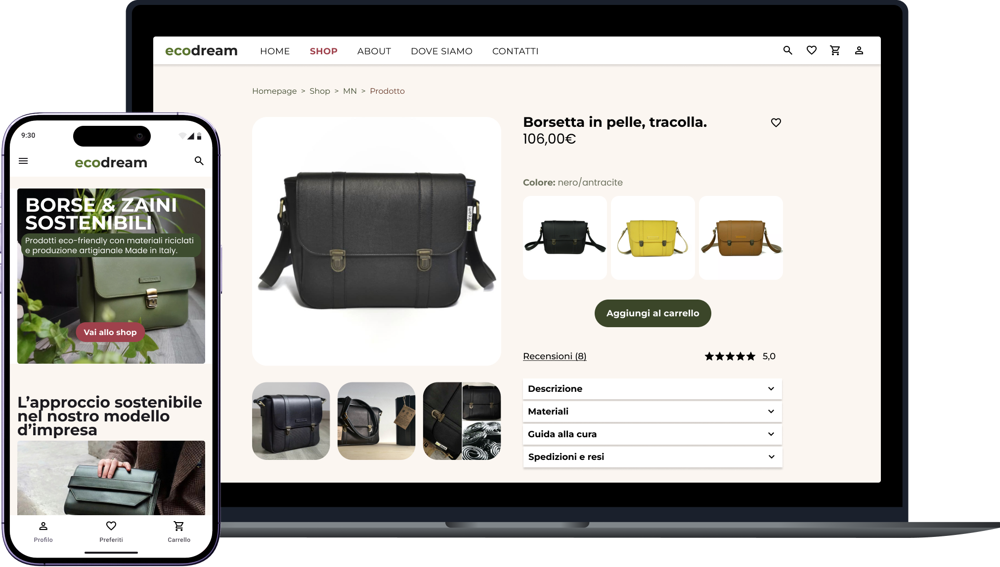
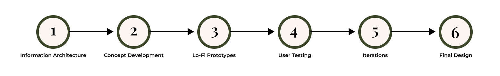

Ecodream

Redesigning Ecodream’s e-commerce platform into a mobile-first, fully accessible digital ecosystem that aligns seamless user experience with sustainable values.
UX Design, UI Design, UX Research
UX/UI Designer
Wireframes, Hi-fi Prototypes, Design System
3 months
The Project
Ecodream is a brand that transforms reclaimed materials into handmade bags and backpacks in Italy. The goal of the redesign was to bridge the gap between the brand's ethical values and a digital user experience that was fragmented and unintuitive.
Problem (Analisi As-Is)
Aligning E-Commerce with Accessibility and Brand Values
Ecodream, an ethical fashion brand, needed a complete digital transformation. The legacy platform suffered from a text-heavy layout, poor product findability (no search or filters), and high cart abandonment. Furthermore, an accessibility audit via WebAIM and WAVE revealed critical failures in keyboard navigation and screen-reader support. The challenge was to rebuild the platform to be fully inclusive, intuitive, and reflective of the brand's sustainable identity.
Solution
An Insight-Driven, Fully Inclusive Digital Storefront
I led the end-to-end research, information architecture, and UI redesign for desktop and mobile. To transform the user experience, I implemented: Advanced Findability: Streamlined sitemap, global search, and robust filters. WCAG-Compliant UI: High-contrast palette and accessible typography. Frictionless Conversion: Quick cart updates and transparent shipping data. Through moderated usability testing, I iteratively validated the prototypes. While core tasks succeeded immediately, I leveraged user feedback to refine product pages, ensuring total transparency and building consumer trust.
Process

Discovery & Research
Analisi as is, ricerca utente, personas e user journey
Analisi As Is
Visibilità dello stato del sistema
Desktop
- Le categorie principali si trovano nella header.
- Cliccando sul logo il sito ti reindirizza alla pagina home.
- Icone poco presenti e/o inesistenti.
- I titoli e i sottotitoli non sono presenti in ogni pagina e non hanno una struttura chiara e ben definita.
- Lo shop non è chiaro e non presenta filtri che aiutino l'utente a individuare i prodotti desiderati.
- Non c'è un pulsante che ti faccia tornare indietro alle pagine precedenti.
- Non è presente nessun elemento che comunichi all'utente il caricamento di un processo.
- Non sono presenti breadcrumb che indichino all'utente dove si trovi mentre naviga nel sito.
- Il footer non è ottimizzato, sono presenti solo alcune info riguardanti la posizione, la P.IVA la mail e due collegamenti social.
Smartphone
- Il sito si visualizza e si adatta bene su mobile.
- Il logo riporta alla pagina principale.
- È presente un menù ad hamburger.
- Icone poco presenti e/o inesistenti anche su mobile
- I link non sono visibili e si rischia di cliccarci sopra involontariamente interrompendo così la navigazione.
- Non è presente un pulsante per tornare alla pagina precedente.
- Footer non ottimizzato
- Shop poco chiaro
Sistema e mondo reale
- In generale linguaggio usato è user friendly.
- Presente il tasto di traduzione automatica.
- Si può accedere alle categorie principali tramite un hamburger a menù. (smartphone)
- I testi sono lunghi e poco organizzati, aumentando la possibilità di abbandono per l'utente.
- Alcune parole citate nelle varie categorie sono comprensibili solo per un certo tipo di target.
- I link non sono visibili.
- Non tutte le categorie sono etichettate in modo corretto.
Controllo e libertà utente
- Il sito presenta un responsive design.
- Si possono eliminare prodotti dal carrello.
- Dal carrello c'è il pulsante 'tornare agli acquisti'.
- C'è la possibilità di scegliere la modalità di pagamento
- È possibile effettuare l'acquisto senza accedere al sito.
- Dopo l'inserimento del codice sconto è possibile aggiornare il prezzo prima di concludere l'acquisto.
- L'utente non può modificare la quantità di un articolo dal carrello.
- Non è presente una live chat.
- Non è possibile registrarsi tramite i social.
- Non è presente un pulsante 'Indietro' o 'Annulla'.
- Non è presente una barra di ricerca che permetta agli utenti di cercare un particolare prodotto in modo autonomo e veloce.
- Non è possibile filtrare i risultati per modello, colore o categoria.
Coerenza e standard
- Le pagine web tra di loro sono coerenti.
- Forme e stili sono coerenti in quasi tutte le pagine.
- I colori usati sono coerenti con il brand e la sua filosofia.
- Cliccando il logo si torna alla 'home'.
- La suddivisione dei prodotti nello shop non è ordinata.
- L'icona dello 'shop' ha uno stile grafico non coerente con il resto del sito.
- Non è coerente l'uso dell'Italic e del Bold nei vari testi.
Prevenzione degli errori
- Si possono eliminare prodotti dal carrello.
- Dal carrello c'è il pulsante "tornare agli acquisti".
- Quando provi ad aggiungere due volte un prodotto il sito te lo fa notare con una notifica.
- L'utente non può modificare la quantità di un articolo dal carrello.
- Non è presente un pulsante 'Indietro' o 'Annulla'.
- Non è presente una barra di ricerca che permetta agli utenti di cercare un particolare prodotto in modo autonomo e veloce.
- I link non sono per visibili e si rischia di cliccarci sopra involontariamente interrompendo così la navigazione.
Riconoscimento piuttosto che richiamo
- Il layout del sito è semplice e intuibile.
- Non è presente una barra di ricerca che permetta agli utenti di cercare un particolare prodotto in modo autonomo e veloce.
- Le info e i componenti nell'interfaccia provocano spesso confusione.
- Non sempre è chiaro capire in quale pagina/sezione ci si trova.
Flessibilità ed efficienza
- Dal carrello c'è il pulsante "tornare agli acquisti".
- È possibile approfondire diversi contenuti, come le iniziative in cui si impegna ecodream o i partner con cui collabora.
- Non è presente una 'wishlist' o 'sezione preferiti'.
- Testi lunghi.
- Molte pagine possono essere raggiunte solo tramite la navigazione di più pagine.
- Il footer non è ottimizzato né per la versione mobile né per quella desktop.
- Il menù non ha icone che possano aiutare l'utente a ricordarsi dove si trova all'interno del sito.
Design estetico e minimalista
- I colori e le foto usate sono coerenti con il brand e la sua filosofia.
- Non ci sono elementi di distrazione, il layout è chiaro e pulito.
- Le foto sulla home fanno percepire chiaramente cosa andremo a trovare sul sito e di cosa si occupa il brand.
- Al contrario del layout, il design è confusionale, utenti con poca esperienza nella navigazione potrebbero non riuscire ad esplorare il sito come dovrebbero.
- Il logo a primo impatto risulta di una qualità inferiore rispetto alle foto sottostanti.
- Il logo occupa troppo spazio.
- I loghi sottostanti sono troppo grandi e confusionari, inoltre non c'è una descrizione della categoria a cui appartengono.
Aiutare gli utenti con gli errori
- Si possono eliminare prodotti dal carrello.
- Si può recuperare il prodotto eliminato dal carrello.
- Quando provi ad aggiungere due volte un prodotto il sito te lo fa notare con una notifica.
- Nella sezione contatto, se viene inserita una mail inesistente il sistema la accetta comunque.
- Gli errori durante il login non vengono notificati e gestiti chiaramente.
Aiuto e documentazione
- L'utente può contattare il brand tramite una mail o tramite un modulo.
- Nella sezione 'contatti' è presente un numero whatsapp.
- Il regolamento per resi e spedizioni è chiaro.
- Oltre al numero whatsapp non sono forniti ulteriori recapiti telefonici.
- Non sono presenti recensioni dei prodotti per un riscontro dei consumatori.
- Non sono presenti FAQ.
- Non sono presenti Condizioni d'uso, Privacy e Cookie Policy.
Nel complesso il sito è USABILE
Architettura dell'Informazione
La struttura del sito è stata ridisegnata per creare un flusso logico e intuitivo:
1.0 HOME
- 1.1 Info - Informazioni generali
- 1.2 CTA 'scopri di più' → 1.2.1 About
- 1.3 Handbags - Modelli di borse a mano o tracolla
- 1.4 Backpacks - Modelli di borse a zaino
- 1.5 Hybrid - Modelli di prodotti che possono essere usati sia come borse e zaini
- 1.6 Showroom, 1.7 Retail, 1.8 LAB
- 1.9 Upcycling - Descrizione della filosofia
- 1.10 Eva Szecsodi Limited Edition
- 1.11 Vegan Proposal
- 1.12 About us, 1.13 Achievements, 1.14 Initiatives, 1.15 Agreements
2.0 SHOP
- 2.1-2.3 Info su termini, pagamenti, spedizioni e resi
- 2.4 Personalizzazione del prodotto
- 2.6-2.16 Shop per i vari modelli e categorie
- 2.17 Outlet
- 2.18 More - Tracolle e altri accessori
- 2.19 Gift Card
3.0 ABOUT
- 3.1-3.7 Mission, vision e filosofia del brand
- 3.8 La Repubblica - Articolo sul rapporto GreenItaly 2021
4.0 MODELLI
- 4.1 Borse
- 4.2 Zaini
- 4.3 Hybrid
5.0 MATERIALI
- 5.1-5.6 Info sui materiali selezionati
- 5.7 Mercatino delle rimanenze
- 5.8 Manutenzione prodotto
6.0 RETAIL
- Lista dei punti vendita
7.0 CONTATTI
- 7.1 Showroom
- 7.2 Lab
- 7.3 Mappe
- 7.4 Modulo contatto
- 7.5-7.7 Social media
8.0 IL MIO ACCOUNT
- 8.0.1 Tracciamento ordini
- 8.1 Accedi/Registrati
- 8.1.1-8.1.5 Dati personali e ordini
- 8.1.6 Esci da account
9.0 CARRELLO
- Gestione acquisti e codici promozionali
Analisi dei Competitor
Nel settore della moda sostenibile sono stati analizzati i seguenti competitor diretti, tutti con caratteristiche simili a Ecodream: Made in Italy, prodotti etici e sostenibili, slow fashion, e-commerce come canale di vendita principale.
EXSEAT
Un brand italiano che trasforma materiali di scarto come cinture di sicurezza e tessuti recuperati da auto in disuso in borse e zaini unici. Tutti i prodotti sono realizzati artigianalmente in Italia, seguendo una filosofia di upcycling e sostenibilità ambientale.
STUDIO SARTA
Questo marchio palermitano nato nel 2017 si distingue per l'artigianalità e l'uso di materiali locali come la paglia di Vienna. Studio Sarta unisce tradizione e modernità, con una forte attenzione alla sostenibilità. Le borse sono interamente fatte a mano.
EUTERPE
Specializzato in borse sostenibili Made in Italy, Euterpe si distingue per l'utilizzo di materiali di alta qualità e design artigianale. Il brand mira a offrire borse lussuose a prezzi accessibili, puntando su etica, artigianalità e sostenibilità.
CINGOMMA
Con sede a Torino, Cingomma è un brand che si dedica alla produzione di accessori sostenibili e vegan-friendly. Riciclano camere d'aria di biciclette per creare cinture, portafogli, borse e zaini. Ogni pezzo è unico e completamente privo di materiali di origine animale.
MALÌA LAB
Fondato da Flavia Amato, questo brand si concentra su abbigliamento e accessori sostenibili realizzati con materiali biologici come cotone e lino. Malìa Lab promuove la trasparenza nella produzione e il rispetto per l'ambiente.
TOO ITALY
Marchio indipendente di accessori vegan e sostenibili, nato nel 2011. Questo brand produce borse e zaini utilizzando materiali ecologici come PVC bullonato, tessuti di riciclo e gomma. Too Italy è noto per l'attenzione all'etica ambientale e per il design innovativo.
Target e User Research
Dall'analisi delle interazioni online e dei dati disponibili, il target principale di Ecodream è composto da:
- Genere: prevalentemente donne
- Età: tra i 25 e i 45 anni
- Fascia economica: media
- Etica: orientata verso scelte sostenibili, rispettose dell'ambiente e degli animali
- Rapporto con la tecnologia: uso frequente e consapevole
Metodologia della ricerca
È stato sottoposto un questionario di 18 domande a 10 donne tra i 25 e i 40 anni con lo scopo di analizzare:
- Le loro abitudini di acquisto
- L'impatto delle funzionalità di un sito e-commerce sul comportamento degli utenti
- Le loro preferenze e criteri di scelta durante l'acquisto di borse o zaini
- Aree critiche del sito
Risultati della ricerca
Dove acquisti di solito?
Online 55% | Negozio fisico 45%
Con quale dispositivo preferisci acquistare online?
PC 39% | Cellulare 60% | Tablet 1%
Possiedi abbigliamento ecologico nel tuo armadio?
Si 95% | No 5%
Hai mai acquistato prodotti da brand sostenibili?
Si 65% | No 35%
Quando effettui un acquisto online, preferisci che il prodotto sia in pronta consegna?
Si 50% | No 10% | Non lo considero 40%
Con quale frequenza acquisti borse o zaini online?
Raramente 35% | Una volta l'anno 45% | Più volte l'anno 20%
Qual è il principale fattore che consideri quando acquisti una borsa o uno zaino online?
Qualità/Prezzo 47% | Materiale 30% | Design 15% | Brand 2% | Altro 6%
Quanto influisce la qualità dei materiali nella tua scelta?
Molto 58% | Abbastanza 35% | Poco 7%
Preferisci prodotti realizzati in maniera artigianale o ti interessa di più il design e la funzionalità?
Artigianale 38% | Funzionalità 62%
Quanto spenderesti per una borsa o zaino ecosostenibile?
0-20€ 2% | 20-50€ 49% | 50-100€ 45% | 100-250€ 4%
Quando acquisti, poni attenzione alle info sulla produzione e sui materiali utilizzati?
Si 80% | No 20%
Quale delle proposte del sito consideri maggiormente per un acquisto?
Borse 67% | Zaini 3% | Hybrid 30%
Qual è la tua fascia d'età?
18-24 anni 20% | 25-34 anni 40% | 35-44 anni 35% | 45+ anni 30%
Quante borse o zaini possiedi?
0-4 17% | 5-9 78% | 10+ 5%
Hai mai abbandonato un acquisto a causa di problemi con il sito?
Si 38% | No 62%
Quanto è importante per te leggere le recensioni del prodotto?
Molto 58% | Abbastanza 35% | Poco 7%
Condividi i tuoi acquisti sui social media o con gli amici?
Si 2% | No 49%
Consiglieresti Ecodream?
Si 63% | No 37%
Cosa abbiamo scoperto
- La maggior parte degli utenti preferisce fare acquisti online, con il 60% che predilige questa modalità e il 88% che utilizza il telefono per navigare sui siti e-commerce.
- Il 95% degli intervistati possiede abbigliamento ecologico nel proprio armadio, e più della metà (65%) acquista prodotti da brand sostenibili.
- Gli intervistati vogliono trasparenza sui materiali e sui processi di produzione, senza però rinunciare, nella scelta, alla funzionalità del prodotto.
- I principali criteri di scelta si concentrano sul rapporto qualità/prezzo (47%) e sui materiali (30%).
- Per quanto riguarda l'esperienza d'acquisto online, la maggioranza ha almeno una volta abbandonato l'acquisto a causa di problemi con il sito e ritiene che le recensioni del prodotto siano fondamentali.
Accessibilità
Implementazione di standard WCAG e inclusive design
La riprogettazione ha incorporato principi di accessibilità secondo le linee guida WCAG 2.1, garantendo che il sito sia utilizzabile da persone con diverse abilità e disabilità, utilizzando tecnologie assistive come screen reader, tastiera, e ingranditori.
Wireframe e Layout
Griglia Layout, Scala Tipografica, Wireframe desktop e mobile
Griglia Layout
È stata definita una griglia layout rigorosa per garantire coerenza e responsività su tutti i dispositivi (mobile, tablet, desktop). Questo approccio di design atomico assicura che i componenti siano scalabili e modulari.
Scala Tipografica
La gerarchia tipografica è stata definita seguendo proporzioni armoniche per migliorare la leggibilità e creare una chiara struttura visiva. I heading e i body text sono stati calibrati per un'esperienza di lettura ottimale su tutti i dispositivi.
Wireframe Desktop e Mobile
Sono stati creati wireframe dettagliati per rappresentare il layout su desktop (1920px) e mobile (375px), assicurando che ogni elemento sia correttamente posizionato e accessibile indipendentemente dal dispositivo utilizzato.
Wireflow Utente
Il flusso utente è stato mappato per seguire il percorso completo dall'ingresso al sito fino al completamento dell'acquisto, identificando i punti critici e le opportunità di ottimizzazione.
User Interface
UI kit, Interazione, User flow
UI Kit
È stato creato un UI Kit completo che include:
- Palette colori: Toni naturali e sostenibili che riflettono l'identità del brand
- Tipografia: Scelta di font leggibili e coerenti con il brand
- Componenti: Bottoni, form, card, badge e altri elementi riutilizzabili
- Iconografia: Set di icone coerente e intuitivo
Interazione
Gli elementi interattivi sono stati progettati per fornire feedback immediato e chiaro all'utente, migliorando l'esperienza di navigazione e rendendo le azioni più intuitive.
User Flow
Il flusso utente è stato ottimizzato per guidare l'utente in modo naturale attraverso il percorso d'acquisto, riducendo gli step necessari e eliminando punti di frizione.
Architettura e Flussi

Design Atomico & UI Kit
Ho creato un UI Kit basato su toni naturali per riflettere l'eticità del brand, utilizzando una griglia layout rigorosa per garantire l'accessibilità e la responsività su ogni tipo di dispositivo mobile e desktop.
User Testing & Validazione
Metodologia, targeting, recruiting, script, task e risultati
Metodologia e Obiettivi
Il testing di usabilità è stato condotto con l'obiettivo di validare il design proposto e identificare eventuali punti di criticità prima del rilascio finale. Sono stati effettuati test moderated con utenti reali del target.
Target dei Test
Sono stati selezionati utenti coerenti con il target identificato durante la fase di ricerca: donne tra i 25 e i 45 anni, interessate alla moda sostenibile, con esperienza di acquisti online su dispositivi mobile.
Recruiting
I partecipanti sono stati reclutati attraverso il network del brand e piattaforme di user testing, assicurando una rappresentatività adeguata del target.
Script e Task
Ai partecipanti è stato chiesto di completare task specifici:
- Trovare una borsa di un colore specifico
- Applicare un filtro per modello
- Completare un acquisto
- Trovare le informazioni su spedizione e resi
- Contattare l'assistenza
Prototipo Testato
È stato testato un prototipo interattivo realizzato in Figma che rappresentava il percorso completo dall'homepage fino al completamento dell'acquisto.
Metodologia Test
I test sono stati condotti utilizzando la metodologia del thinking aloud, durante i quali i partecipanti verbalizzavano i loro pensieri, le loro incertezze e le loro reazioni durante l'interazione con il prototipo.
Risultati del Testing
Il testing ha confermato che il nuovo design è intuitivo e migliora significativamente l'esperienza di navigazione rispetto al sito originale. I risultati chiave:
- Task Completion Rate: Il 90% dei partecipanti ha completato con successo i task proposti
- Tempo di completamento: Ridotto mediamente del 40% rispetto al sito originale
- System Usability Scale (SUS): Punteggio medio di 78/100
- Insight critico: Gli utenti cercavano le informazioni di reso e spedizione già nella scheda prodotto
Iterazioni Basate sul Feedback
Su base dei risultati del testing, sono state apportate le seguenti modifiche:
- Aggiunta di sezioni informative su spedizione e resi direttamente nella scheda prodotto
- Miglioramento della visibilità dei filtri di ricerca
- Ottimizzazione del layout per dispositivi mobile
- Implementazione di breadcrumb per migliorare l'orientamento
Conclusioni
Il progetto Ecodream dimostra come un approccio user-centered e iterativo possa trasformare un catalogo complesso in un'esperienza d'acquisto fluida, valoriale e ad alta conversione. Le migliorie proposte non solo risolvono i problemi identificati durante l'analisi iniziale, ma creano anche un ecosistema digitale più consapevole e inclusivo, coerente con i valori del brand.